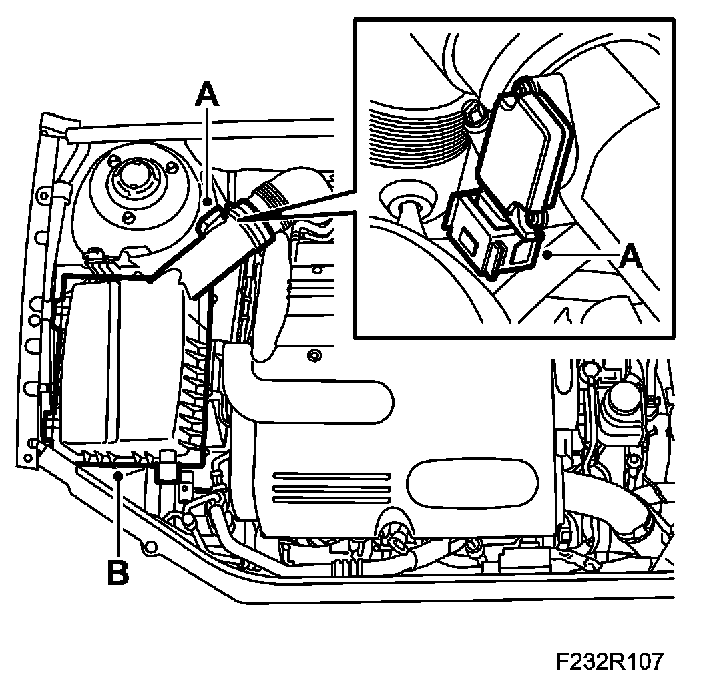
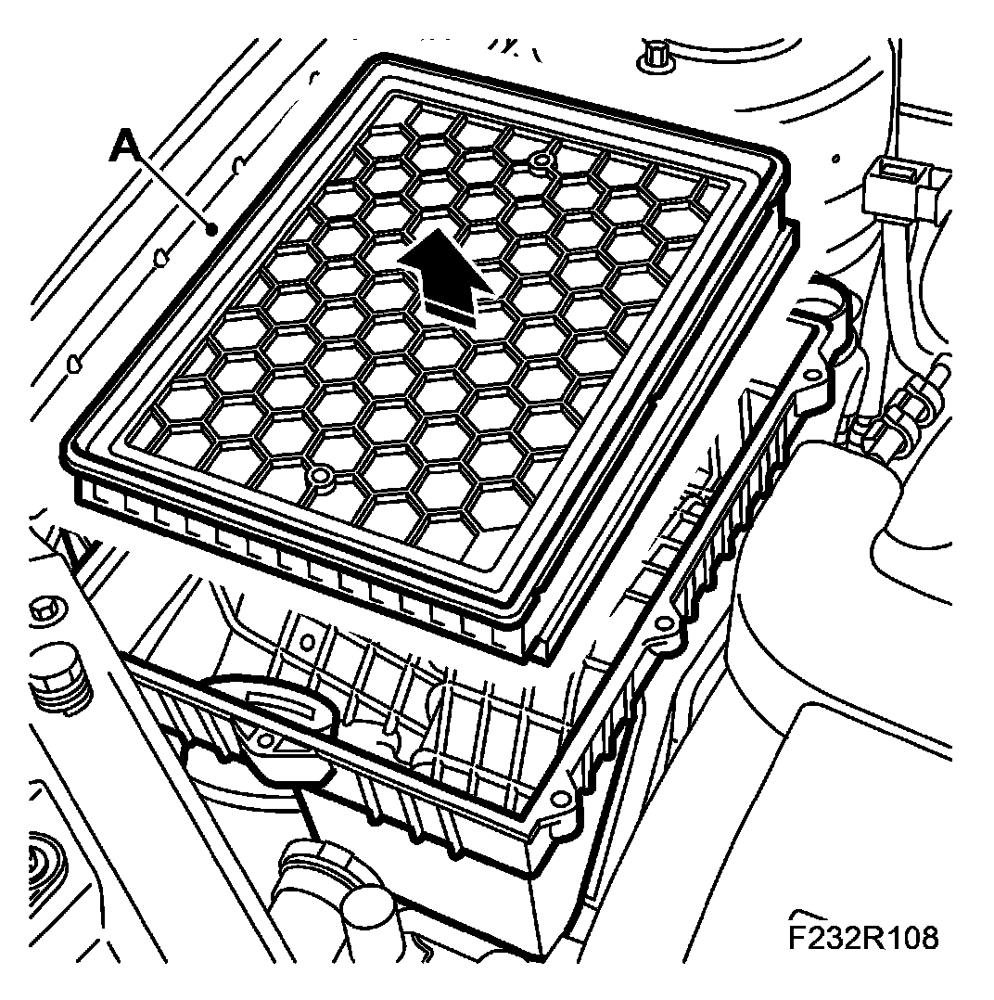
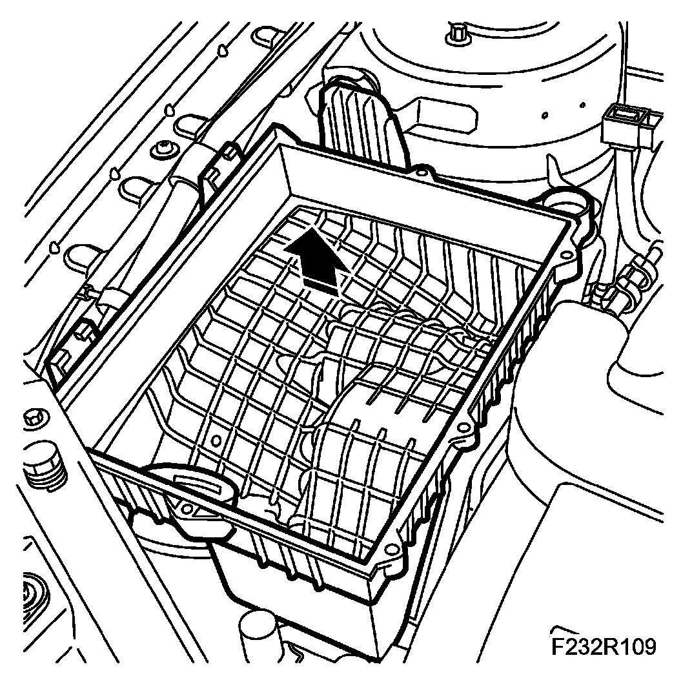
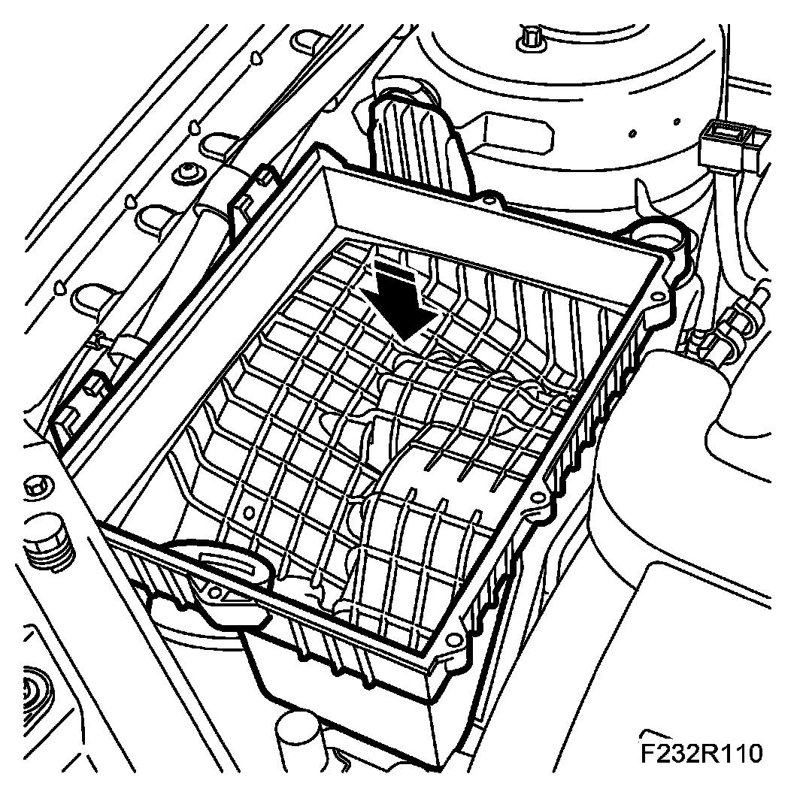
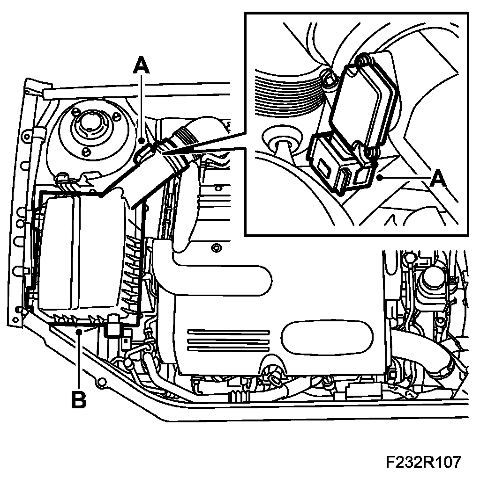

Air Cleaner, B207
Air Cleaner, B207
To remove
1. Remove the air cleaner casing cover.

- Unplug the connector from the mass air flow sensor (A).
- Remove the air cleaner casing cover (B).
2. Remove the filter element.

- Remove the filter element (A).
3. Remove the air cleaner casing lower section.

- Remove the air cleaner casing lower section. Press out the intake manifold so that it becomes loose before the air cleaner casing is lifted out.
To fit
1. Fit the air cleaner casing lower section.

- Fit the air cleaner casing lower section. Take care that the intake manifold is properly in position.
2. Fit the air cleaner.
- Fit the air cleaner.
3. Fit the air cleaner casing cover.

- Connect the hose to the air cleaner casing cover (B).
- Plug in the mass air flow sensor connector (A).